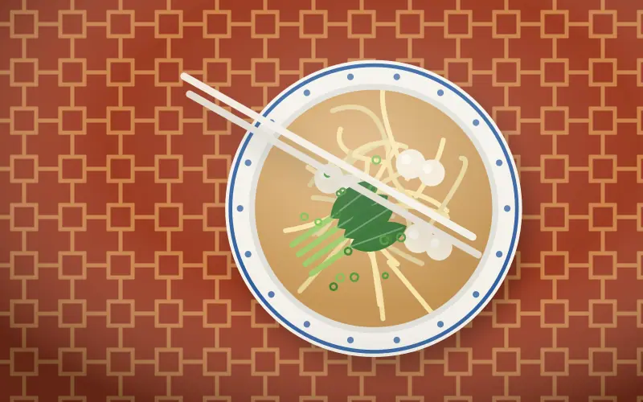

麵 · Noodles17%OFF
Central · Central & Western
Chee Kei (Central)
池記（中環）
Wonton noodles + crispy fried fish skin雲吞麵 + 炸魚皮
$68$82Save HK$14
53/100
HK Cheap Eats Value Score · Average valueEstimated from the editors’ rating, price vs similar noodles places and MTR access. Portion size and customer reviews aren’t scored yet. How it’s calculated
- Hours
- 11:00 – 22:30
- Best for
- Dinner
- Nearest MTR
- Hong Kong 香港 · 6 min walk
- Pay with
- Octopus · Card · FPS / PayMe
- Cuisine
- Noodles 粉麵
- Area
- Central 中環 · Central & Western 中西區
- Status
- Unverified
- Source
- HK Cheap Eats editors
- Listed
- 19 Nov 2026
- Price last checked in store
- Not yet
Picture is an illustration, not a photo of this restaurant. Spotted a wrong price or hours? Suggest a correction in the app.